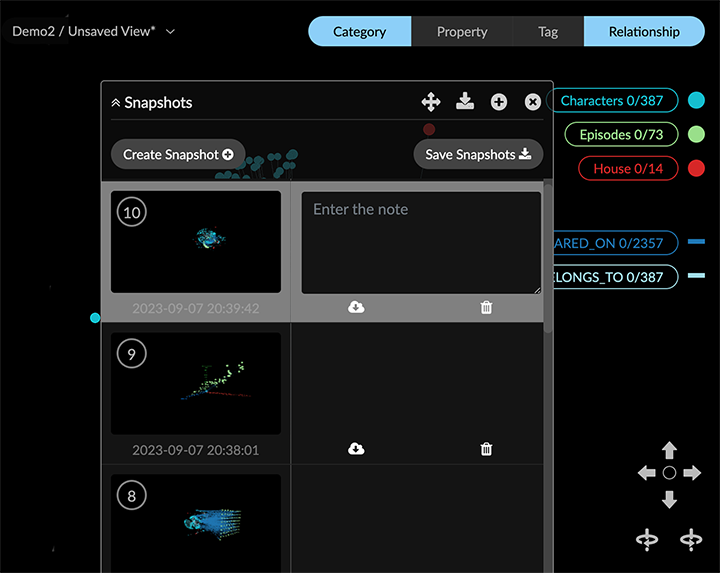

Saving Data Views or Snapshots You can save the visible data in the project space as a data view or snapshot at any time. This saves both the graph data and its 3D layout. Since there are many actions you cannot easily revert, you must save any state of the graph that you may want to revisit, such as the results of transformation, simplification, or layout. Moreover, all data in the project space is deleted when you leave the project or log out. There are essentially two ways to save your graph data: A data View, which is uploaded to the server such that it persists in the project until you delete it. Saved views are displayed in the Project panel and Views tab, and in a compact views menu at the top center of the project space. A Snapshot, which is saved locally, but does not persist when you exit the project. Saved snapshots appear in a separate Snapshots pane. To display it, go to the Project panel and Settings tab and click Show Snapshots. If you only need an image of the data layout and the legend, but not the live graph data, you can download a .png screenshot or an SVG file. For a screenshot, click Take Screenshot on the toolbar or Project > Data tab, or Screenshot on the right-click menu. For an SVG file, click Export SVG on the Project > Data tab. The screenshot or SVG file is labeled with the project name, and saved in the location set in your system preferences (such as Downloads). Working with Data Views A data View is a named GXRF file uploaded to the server. Once saved, a view persists in a project until you delete it. Saved data views are available to any user of the project. Individual views can also be shared with users even if they do not have access to the project. You can export a view to your local system as a GXRF file, and from there load it into a different project as a new view. However, it is usually better to share views. Using the Views panel The Project > Views panel displays your saved views as thumbnail previews or a list, and provides options to find and load views, as well as to create, update, share, and delete them. Views created in previous versions of GraphXR remain available, but do not include a thumbnail preview. You can: Save the data in the graph to the last view you loaded, or use Save As to save the data as a new view. Load a view by clicking its thumbnail preview or list item. Find a view using the list or the thumbnail previews. To narrow your search you can: Sort views by Name, Date Modified, or Date Created, in either ascending or descending order. The Date Modified timestamp is displayed in the list, and also in the view’s information panel. Filter views by name. You can enter all or part of a view name in the filter search bar. To clear the filter, you must delete your search input. Share, rename, or delete a view by clicking icons on the thumbnail or list. Display an information panel to see the number of nodes and edges, date the view was created and date last modified, and to review or add remarks. Using the view menu The view menu at the top of the project space near the legend displays the current project and the name of the last view you loaded. An asterisk appears next to the name if the view has been modified since it was loaded (for example, by adding or deleting data, or simply re-positioning the data). In the view menu you can also: Select New to clear the graph and flag the project space as an empty Unsaved View. This action is only available on the views menu. Select and load a view by name either from a list of recent views sorted by the date last modified, or all views sorted alphabetically. Select Share to share the current view. Working with Snapshots Snapshots let you save a set of up to ten (10) graph states in memory, re-load them, and save and re-load the collection of views as an archive at any time. Unlike data views, snapshots cannot be shared with other project users. However, they are very useful for saving the graph at key points during an exploration. 